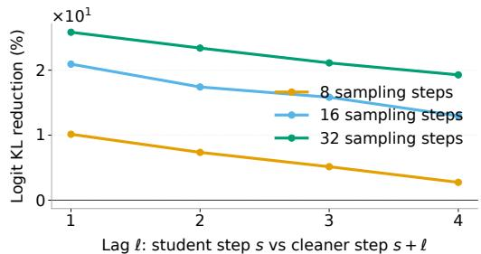

Figureure 12 · : Checkpoint selection for the ${ \mathcal { L } } _ { \mathrm { C O NFigure 12: Checkpoint selection for the ${ \mathcal { L } } _ { \mathrm { C O N S } }$ post-training stage. (Left) Generative perplexity across budgets improves rapidly during early consistency training, but later checkpoints over-sharpen the model, as reflected by collapsing entropy values shown in parentheses. Sampling is done without warm-start (e.g. no reuse) (Right) Validation perplexity is not monotonic: it first rises above the 15% threshold, then can decrease again at later checkpoints. Since these later decreases do not recover sample diversity, we use the first checkpoint whose validation perplexity exceeds the pre-LCONS value by 15% as our stopping rule. This empirically balances generation quality and sample diversity.这张图来自论文 PDF 的结构化抽取。当前用于辅助理解 Fixed-Point Masked Generative Modeling 的方法或实验，请结合正文精读段落一起看。

Figureure 11 · : Lagged logit analysisFigure 11: Lagged logit analysis. (Left) output-head-projected hidden-state changes decrease as the number of sampling steps increases, for both the baseline and the $\mathcal { L } _ { \mathrm { C O N S } }$ model. (Right) relative reduction in lagged logit KL from ${ \mathcal { L } } _ { \mathrm { C O N S } }$ compared to the baseline, measured between a student denoising step s and a cleaner future step $s + { \ell } .$ The consistency-trained model reduces lagged logit KL across lags and sampling-step settings, with the strongest gains at smaller lags.这张图来自论文 PDF 的结构化抽取。当前用于辅助理解 Fixed-Point Masked Generative Modeling 的方法或实验，请结合正文精读段落一起看。